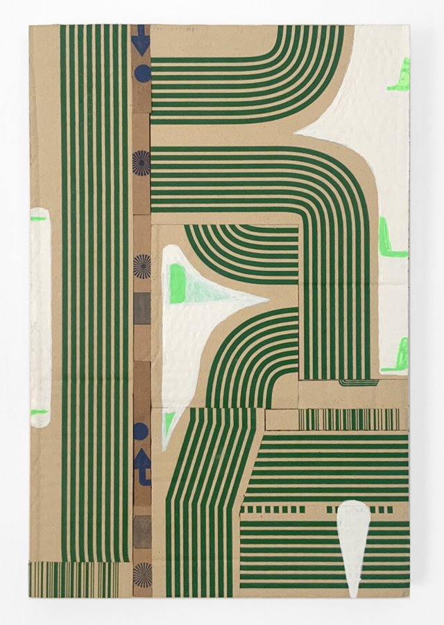

Andrew Zarou: Waves of Return of Waves
“In 2018, I returned to painting after a twenty-five year hiatus. In 2023, my partner and I moved from New York City to western Massachusetts, where I attended college and where my family had property until the early 2000s. This past summer, I began playing music again after roughly twenty years. My current life has strong reverberations from when I was a student at Hampshire College in the 1990s.
My work exists in the space between formal, geometric abstraction and intuitive lyricism. Some paintings remain in the realm of non-narrative abstraction, while others veer into recognizable forms and autobiographical references. I find the latter more compelling due to the surprise of layered meanings. Initially, I didn’t know how to integrate lyrical narratives into formal abstraction—it felt vulnerable and vexing. But it’s become central to how I work now.
Waves have been a recurring motif in my work, and lately the river has been entering it as well. My studio overlooks a small river, unlike my previous Brooklyn studio which faced a busy avenue. During summer months I routinely slip in for swims. Part of the river’s appearance in the work has to do with the ergonomics of handling paint with a flat brush, but mostly it reflects my daily immersion in this landscape.
As a musician trained through punk and art rock, my go-to guitar effect is tremolo. With the intensity set at 10 and speed at 4, tremolo disrupts the present tense by bending waveforms into more pronounced waves—an ethereal net becomes present. It has a similar transportive quality to when late afternoon sun reflects off the river onto my ten-foot studio ceiling. Light patterns softly vibrate, glowing down from above. Like a pulsating note or chord, the character of space and psychology of the perceiver is transformed.
Non-dogmatic practices and chance outcomes are a big part of why I spend time making work. When I paint, I’m mostly trying to have an intuitive, material endeavor, but sometimes autobiographical associations emerge. Small and large cycles provide opportunities for themes to repeat, and I’m learning to welcome rather than resist what returns.” — Andrew Zarou, 2026